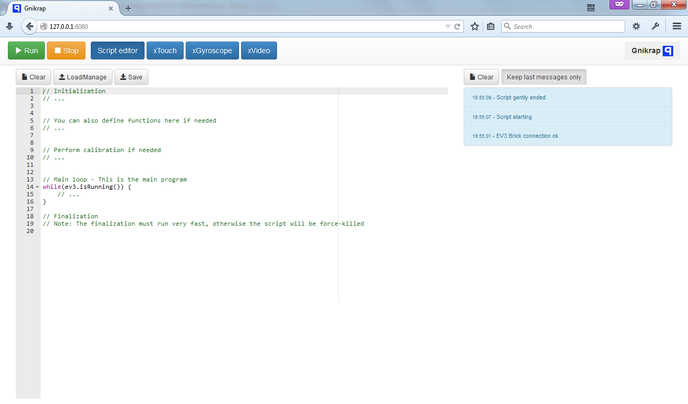

A scripting environment simple to use for Lego Mindstrom EV3
1. About
1.1. Scripting on the EV3
Provide a simple and powerful way to make script based programming on the EV3.
-
The tool is straightforward to use.
-
Can be used on a computer or a tablet, in fact any device that have a modern browser (HTML5 compatible).
-
Javascript, the scripting language available by default is currently one of the more popular scripting language)
|
It is also feasible to use other scripting language available on the JVM. A list of some scripting language available on the JVM can be found here. |
1.2. Empower the device' sensors
Give the opportunity to use the tablet sensors in the same way as if this is sensor directly linked to the EV3 device. The list of XSensors (for eXternal Sensors) available right now is:
-
xTouch: A 24 touch tactile screen that enable to remotely pilot a robot in a simple way (see [The XTouch XSensor] for more details).
-
XGyro: Use the gyroscope of your mobile device (eg. tablet) in order to control a robot (see [The XTouch XGyro] for more details).
-
xVideo: Use the webcam of any device (tablet, computer) in order to track objects (see [The xTouch XVideo] for more details) and make your robot react to the environment.
|
Other XSensors that could be envisaged in the future:
|
1.3. Full documentation available
You are at the right place to evaluate it ! Just have look to see if it’s ok for you :-)
1.4. Why don’t use Gnikrap
Gnikrap is nice, but you’re not sure… Here are some element that can make you use another tool to program with the EV3 :
2. How to install
The installation consist of several steps:
-
Install leJOS
-
Download Gnikrap and tools needed for installation
-
Install Gnikrap
-
Launch Gnikrap (only this step has to be performed once installed)
Here are the steps needed in order to have Gnikrap working on your EV3:
- Lejos installation
-
-
Download and install leJOS as described on the page: http://sourceforge.net/p/lejos/wiki/Installing%20leJOS/[Installing leJOS
-
Configure a network link between your computer and the EV3:
-
Either with Wifi, see Configuring Wifi
-
Either with bluetooth PAN, see Pairing (from the PC)
-
-
- Download gnikrap and other tools needed for the installation
- Copy and install Gnikrap
-
-
Connect by using the following settings (Host name can depend of your network settings. 10.0.1.1 is the IP address to use while connected with bluetooth):

Note: There is no password for the root account on the EV3.

-
Put the Gnikrap distribution file on the EV3.

Note: The network speed with the EV3 is quite slow.
-
Connect to the EV3 brick with Putty

Login with "root" as user and no password:

-
Uncompress the Gnikrap software:
-
Uncompress the files with the command
tar -xz -f gnikrap-core-0.3.0.tar.gz
-
-
- Launch Gnikrap
-
-
If needed, connect to the EV3 brick with a telnet client (see putty section above)
-
Launch Gnikrap:
-
Go to the bin folder:
cd gnikrap-core-0.3.0/bin -
Start Gnikrap:
./start.sh
-
-
Finally open a browser on your computer and connect to Gnikrap with the following URL:
http://<IP of the EV3>You should have the Gnikrap main screen (it take a few seconds to load) :Note: The first time you launch a script it will take several seconds (more than 10s), because there some initialization to be done. Latter script execution are instantaneous.
-
While shutdown of the EV3 brick is needed, you can use the leJOS menu.
-
|
In some cases, there is not enough memory on the EV3 brick to have 2 java process running at the same time. The solution is to kill the leJOS process (the menu). In order to do that you have to:
While the menu has been killed, you have to stop the brick manually:
|
Note: There is a plan in order to provide a packaging more simple to use (See Changelog for more details)
3. Script API
3.1. General principles
The API has been designed to be simple to use. Here are some explanation that will help you to use the API in a more efficient way:
-
Single entry point: All the API can be accessed from the a single object:
ev3(see The ev3 object for more details).-
All the stuff physically linked to the EV3 brick can be accessed from the object:
ev3.getBrick()(see The ev3 object for more details).
-
-
Method naming convention (don’t be afraid, there is nothing exotic here) :
-
All the methods names starts with an verb.
-
All the methods starting by
isalways returns a boolean (i.e.trueorfalse). -
All the methods starting with
getare getters and will return a value. -
All the methods starting with
setare setters and will set a value. -
The API is English based.
-
-
All the times are expressed in milliseconds (1 second is equals to 1000 milliseconds).
-
All the angles are expressed in degrees (in general negative and positive degrees are accepted).
3.2. The ev3 object
3.2.1. Configuration object
|
Configuration object is for advanced use only. If you don’t understand what it means, don’t use this object. |
3.3. The Brick object

See the others objects in order to have sample usage of the brick object.
3.4. The Motor object

|
On the motor API, some call wait that the operation is ended on the motor (so when the function returns the motor has ended the expected move) while other immediately returns (so the motor is still operating/moving while the function returns). The behaviour is specified for each function. |
Sample code for the Motor object:
var largeMotor = ev3.getBrick().getLargeMotor("B");
// Rotate and wait end of rotation
largeMotor.rotate(360);
largeMotor.setSpeedPercent(100);
largeMotor.rotate(-360);
// Retrieve tacho
largeMotor.rotate(60);
ev3.notify("TachoA: " + largeMotor.getTachoCount());
largeMotor.rotate(-60);
ev3.notify("TachoB: " + largeMotor.getTachoCount());
largeMotor.resetTachoCount();
ev3.notify("TachoC: " + largeMotor.getTachoCount());
// Rotate and don't wait
var tacho;
largeMotor.rotate(360 * 3, true);
while((tacho = largeMotor.getTachoCount()) < 1000) {
ev3.notify("Tacho: " + tacho);
ev3.sleep(200);
}3.5. The Color sensor object

3.5.1. Color object
Sample code for the color sensor:
var colorSensor = ev3.getBrick().getColorSensor("S1");
while(ev3.isOk()) {
ev3.notify("Reflected light: " + colorSensor.getReflectedLight());
ev3.sleep(200);
}var colorSensor = ev3.getBrick().getColorSensor("S1");
while(ev3.isOk()) {
ev3.notify("Ambient light: " + colorSensor.getAmbientLight());
ev3.sleep(200);
}var colorSensor = ev3.getBrick().getColorSensor("S1");
while(ev3.isOk()) {
ev3.notify("Color: " + colorSensor.getColor());
ev3.sleep(200);
}3.6. The IR (Infra-Red) sensor object
3.6.1. RemoteCommandResult object
3.6.2. SeekBeaconResult object
Sample code for the IR sensor object:
var irSensor = ev3.getBrick().getIRSensor("S1");
while(ev3.isOk()) {
ev3.notify("Distance: " + irSensor.getDistance());
ev3.sleep(200);
}var irSensor = ev3.getBrick().getIRSensor("S1");
while(ev3.isOk()) {
var x = irSensor.seekBeacon();
ev3.notify("Beacon found: " + x.isBeaconFound() + ", bearing: " + x.getBearing() + ", distance: " + x.getDistance());
ev3.sleep(200);
}var irSensor = ev3.getBrick().getIRSensor("S1");
while(ev3.isOk()) {
var x = irSensor.getRemoteCommand();
ev3.notify("value: " + x.getValue() +
", tl: " + x.isTopLeftEnabled() + ", tr: " + x.isTopRightEnabled() +
", bl: " + x.isBottomLeftEnabled() + ", br: " + x.isBottomRightEnabled() +
", bea: " + x.isBeaconEnabled() + " nothing: " + x.isNothingEnabled());
ev3.sleep(200);
}3.7. The Touch sensor object

Sample code for the Touch sensor object
// Touch sensor API
var touchSensor = ev3.getBrick().getTouchSensor("S1");
while(ev3.isOk()) {
ev3.notify("Push button: " + touchSensor.isPushed());
ev3.sleep(200);
}3.8. The Keyboard object
3.8.1. Button object
Sample code for the Keyboard object:
// Keyboard API
var enterKey = ev3.getBrick().getKeyboard().getEnter();
ev3.notify("Press enter to continue");
while(enterKey.isUp() && ev3.isOk()) {
ev3.sleep(200);
}
ev3.notify("Enter - Down: " + enterKey.isDown() + " / Up: " + enterKey.isUp());3.9. The Led object
Sample code for the Led object:
// Led API
var leds = ev3.getBrick().getLed();
leds.lightGreen();
ev3.sleep(2000);
leds.lightOrange().blink();
ev3.sleep(2000);
leds.lightRed().blink().blink();
ev3.sleep(2000);
leds.off();3.10. The Sound object
Sample script with Sound object:
// Sound API
var sound = ev3.getBrick().getSound();
sound.setVolume(90);
sound.beep();
for(freq = 50; freq < 1500; freq = freq + 10) {
sound.playTone(freq, 5);
}
sound.playNote("Do", 500);
sound.playNote("Re", 500);
sound.playNote("Mi", 500);
sound.playNote("Fa", 500);
sound.playNote("Sol", 500);
sound.playNote("La", 500);
sound.playNote("Si", 500);3.11. The Screen object
3.12. The Battery object
Sample script with Battery object:
// Battery API
var battery = ev3.getBrick().getBattery();
ev3.notify("Battery current: " + battery.getBatteryCurrent());
ev3.notify("Motor current: " + battery.getMotorCurrent());
ev3.notify("Voltage: " + battery.getVoltageMilliVolt());3.13. The XSensor object
There is API common to all XSensors:
|
For all XSensor values there is function |
3.13.1. The xTouch XSensor
In the screen, you can:
-
Set the sensor name (in our example: "joystick").
-
Configure the xTouch sensor: Set the buttons actions: While not started, click on a button and set the list of actions (comma separated) for the button.
-
Start the xTouch sensor: While a button was clicked, the value of the sensor was updated. On multi-touch devices, you can click several buttons at the same time.
Note: While started, the buttons not configured (without associated actions) will be disabled.
Here are the fields available on the XTouch XSensor:
|
Only the active touches are available within the XSensor values. |
Touch object
Sample script with xTouch XSensor:
// xTouch XSensor
// Configure the xTouch sensor with at least one touch "up"
var xTouch = ev3.getXSensor("xTouch");
while(ev3.isOk()) {
var value = xTouch.getValue();
if(value.isStarted()) {
if(value.containsTouch("up")) {
ev3.notify("You have clicked the 'up' touch !");
} else {
ev3.notify("Click on 'up'");
}
}
ev3.sleep(100);
}3.13.2. The xGyro XSensor

In the screen, you can:
-
Set the sensor name (in our example: "xGyro").
-
Set the orientation of the device (portrait/left landscape/right landscape, reverse portrait) in order to have the right values.
-
Start the xGyro sensor.
|
In order to avoid annoying screen rotation, think to disabled the auto rotate on your device while using the xGyro sensor. |
Axis object
Sample script with xGyro XSensor:
// xGyro XSensor
var xGyro = ev3.getXSensor("xGyro");
while(ev3.isOk()) {
var value = xGyro.getValue();
if(value.isStarted()) {
var y = value.getY().getAngle();
var x = value.getX().getAngle();
ev3.notify("XGyro - x: " + x + ", y: " + y);
}
ev3.sleep(100);
}3.13.3. The xVideo XSensor

In the screen, you can:
-
Start the xVideo sensor. Once started the browser will certainly ask you to select the webcam to use (and to give the authorization to use this webcam).
-
Select objects to track: Once started, click on the video to select the objects to track. You can give the name you want to the object. You can also change the name by clicking again on the object.
|
There is several important point to note about the tracking algorithm used:
Note: The algorithm used was the Lucas-Kanade method (See wikipedia for more details). |


VisibleObject object
Sample script with xVideo XSensor:
// xVideo XSensor
// Configure the xVideo sensor to track one object called "myTarget"
var xVideo = ev3.getXSensor("xVideo");
while(ev3.isOk()) {
var value = xVideo.getValue();
if(value.isStarted()) {
if(value.containsObject("myTarget")) {
var t = value.getObject("myTarget");
ev3.notify("Target found: [" + t.getX() + ", " + t.getY() + "]");
} else {
ev3.notify("Hey, select a target and call it 'myTarget'");
}
}
ev3.sleep(100);
}3.13.4. Advanced usage
You can use several xSensor at the same time. Theses sensors can be on the same device or on several devices. For example, you can run on the same device the xGyro sensor and the xTouch sensor. Another example could be to run the xGyro sensor on one device and the xVideo sensor on another device.
|
However it is recommended to limit to:
|
A note on the behaviour of the function ev3.isOk() while using XSensors: Even if not configured (see Configuration object)
this method will automatically wait a bit while one or several XSensors are actively sending data to the brick. This waiting time
will be automatically reset while there is no more active XSensors.
Note: The aim of this small waiting time is to let the EV3 CPU process the XSensors incoming events in a proper way.
4. Script samples
4.1. The standard template
|
We present here the "standard" template for a script within Gnikrap. This template is automatically loaded while you start Gnikrap. |
// Initialization
// ... (1)
// You can also define functions here if needed
// ... (2)
// Perform calibration if needed
// ... (3)
// Main loop - This is the main program
while(ev3.isOk()) {
// ... (4)
}
// Finalization
// Note: The finalization must run very fast, otherwise the script will be force-killed
// ... (5)| 1 | You will typically found here all the initialisation of the ev3 objects: Retrieve the sensors/motors objects, define and initialize "global" variables, perform other initializations that can take some times. |
| 2 | Here you can define functions that will be used later. It can typically be some algorithm or computation function. |
| 3 | Here you can perform calibration, Typically, these calibration (eg. default light sensor level calibration, etc.) have to be done only once at the beginning of the script. |
| 4 | Here is the main loop of your program. It is important to have ev3.isOk() in the
while condition in order to be able to stop gently the script while using the "Stop" button (in fact, ev3.isOk()
will returns false once the Stop button was clicked ⇒ The main loop will exit in a clean way). If you don’t
put this condition, the script will be stopped abruptly (force-closed). |
| 5 | You can perform some finalization here. However theses finalization should be very quick otherwise the script will be force-closed. Note: You can increase the time before the script was force-closed with the ev3.getConfiguration() object. |
4.2. Remote control a robot
|
In the following example we will control a robot (it can be always the same robot) in different ways. |
4.2.1. A robot controlled with the remote beacon
The aim of the sample is to pilot with the EV3 beacon a robot made of:
-
1 motor for a left wheel (or caterpillar)
-
1 motor for the right wheel (or caterpillar)
-
1 infrared sensor for the receiving remote beacon data
-
(option) 1 motor to launch ball (like in standard EV3 sample)
///////////////////////////////////////////////////////////////////////////////
// Note: Please adjust the port to what is physically connected on your brick.
///////////////////////////////////////////////////////////////////////////////
// Initialization (1)
var leftMotor = ev3.getBrick().getLargeMotor("C");
leftMotor.setSpeedPercent(90);
var rightMotor = ev3.getBrick().getLargeMotor("B");
rightMotor.setSpeedPercent(90);
var medMotor = ev3.getBrick().getMediumMotor("A");
medMotor.setSpeedPercent(75);
var irSensor = ev3.getBrick().getIRSensor("4");
// Main loop (2)
while(ev3.isOk()) {
var rc = irSensor.getRemoteCommand(); // (3)
// Left motor (4)
if(rc.isTopLeftEnabled()) {
leftMotor.backward();
} else if(rc.isBottomLeftEnabled()) {
leftMotor.forward();
} else {
leftMotor.stop();
}
// Right motor (5)
if(rc.isTopRightEnabled()) {
rightMotor.backward();
} else if(rc.isBottomRightEnabled()) {
rightMotor.forward();
} else {
rightMotor.stop();
}
// Fire (6)
if(rc.isBeaconEnabled()) {
medMotor.rotate(3* 360);
while(irSensor.getRemoteCommand().isBeaconEnabled() && ev3.isRunning()) {
// Wait that the beacon button was released
}
}
}
// Finalization
// None (motors will be automatically stopped)| 1 | Here we retrieve all ev3 objects needed in the main loop. Caution: The port has to match with what is physically connected on the brick |
| 2 | The "program" itself. We have 4 main parts: |
| 3 | We retrieve the value of the remote beacon. This value has to be retrieve at each loop because the value change according to the button enabled or not. |
| 4 | The motor for the left BELT which is managed, so we make the motor going forward/backward or stopped according to the buttons enabled. |
| 5 | The same for the right BELT motor. |
| 6 | While the beacon button was pressed: Fire a ball (3 turn of the mid-sized motor). While it’s done, we wait that the beacon button was no more enabled before return to the main loop (this is to avoid multi-fire). |
In this sample, two buttons are associated to one motor, so we have something like that with our 4 buttons:
Beacon button: Special action (fire in out sample) |
|
Top left button: Left motor forward |
Top right button: Right motor forward |
Bottom left button: Left motor backward |
Bottom right button: Right motor backward |
4.2.2. A robot controlled with the xGyro sensor
The aim of this sample is to pilot a robot with the gyroscope of a device.
The robot is to be made of:
-
1 motor for a left wheel (or caterpillar)
-
1 motor for the right wheel (or caterpillar)
|
You also need a device (computer, tablet or smartphone) connected to the EV3 (and running Gnikrap) with a 2 axis gyroscopic sensor. |
///////////////////////////////////////////////////////////////////////////////
// Note: Please adjust the port to what is physically connected on your brick.
///////////////////////////////////////////////////////////////////////////////
// Initialization (1)
var left = ev3.getBrick().getLargeMotor("D");
var right = ev3.getBrick().getLargeMotor("A");
var xGyro = ev3.getXSensor("xGyro");
// Define a function that activate (or not) one motor with the given percentage (positive or negative) (2)
function activateMotor(motor, powerInPercent) {
if(Math.abs(powerInPercent) < 10) { // (3)
motor.stop();
} else if(powerInPercent > 10) {
motor.setSpeedPercent(powerInPercent);
motor.forward();
} else if(powerInPercent < 10) {
motor.setSpeedPercent(-powerInPercent);
motor.backward();
}
}
// Main loop - This is the main program (4)
while(ev3.isOk()) {
var gyro = xGyro.getValue();
if(gyro.isStarted()) { // (5)
var y = gyro.getX().getAngle();
var x = gyro.getY().getAngle();
var leftPower = 0;
if(x > 10) {
leftPower = -(Math.min(Math.round(2*x), 100)); // Back (-) => Forward (+)
} else if(x < -10) {
leftPower = Math.min(Math.round(2*-x), 100);
}
var rightPower = leftPower;
if(y > 10) {
if(leftPower >= 0) {
leftPower += Math.min(Math.round(y), 50);
if(rightPower == 0) {
rightPower = - leftPower;
}
} else {
leftPower -= Math.min(Math.round(y), 50);
}
} else if(y < -10) {
if(rightPower >= 0) {
rightPower += Math.min(Math.round(-y), 50);
if(leftPower == 0) {
leftPower = -rightPower;
}
} else {
rightPower -= Math.min(Math.round(-y), 50);
}
}
activateMotor(left, leftPower);
activateMotor(right, rightPower);
} else { // (6)
activateMotor(left, 0);
activateMotor(right, 0);
}
}
// Finalization
// None (motors will be automatically stopped)| 1 | Here we retrieve all ev3 objects needed in the main loop. Caution: The port has to match with what is physically connected on the brick |
| 2 | We define a function that enable to make a motor, go forward, go backward or stop according to a power value (between -100 and 100) |
| 3 | We use the standard Javascript Math object in order to make our computations (See http://www.w3schools.com/js/js_math.asp) |
| 4 | The "program" itself. Two main cases: |
| 5 | 1st case: xSensor is on, we compute the left motor and right motor power according to the x and y angle returned by the xGyro sensor (see below for more details on the motor power computation). |
| 6 | 2nd case: xSensor is off, we ensure that the motor are stopped. |
- Motor power computation
-
-
The x axis is used to control the forward/backward direction.
-
The y axis is used to control the left/right direction.
-
The motor speed is proportional to the angle. The variation is computed from 10° and 50° (which is the maximum).
-
| x < -10° | -10° < x < 10° | x > 10° | |
|---|---|---|---|
y < -10° |
Go forward and left. |
Move left in place, i.e. motor with opposite speed. |
Go backward and left. |
-10° < y < 10° |
Go forward (no turn). |
Don’t move. |
Go backward (no turn). |
y > 10° |
Go forward and right. |
Move right in place, i.e.(otor with opposite speed. |
Go backward and right. |
4.2.3. A robot controlled with the xTouch sensor
The aim of this sample is to pilot a robot with the keyboard on the screen of a device (can be with the mouse or with a tactile screen).
The robot is to be made of:
-
1 motor for a left wheel (or caterpillar)
-
1 motor for the right wheel (or caterpillar)
|
You also need a xTouch configured with 4 touches: up, down, left and right (see snapshot in The xTouch XSensor for a configuration sample). |
///////////////////////////////////////////////////////////////////////////////
// Note: Please adjust the port to what is physically connected on your brick.
///////////////////////////////////////////////////////////////////////////////
// Initialization (1)
var leftMotor = ev3.getBrick().getLargeMotor("D");
var rightMotor = ev3.getBrick().getLargeMotor("A");
var xTouch = ev3.getXSensor("xTouch");
function activateMotor(motor, powerInPercent) { // (2)
if(powerInPercent < 0) {
motor.setSpeedPercent(-powerInPercent);
motor.backward();
} else if(powerInPercent > 0) {
motor.setSpeedPercent(powerInPercent);
motor.forward();
} else {
motor.stop();
}
}
function activateLeftAndRightMotor(leftPowerInPercent, rightPowerInPercent) { // (3)
activateMotor(leftMotor, leftPowerInPercent);
activateMotor(rightMotor, rightPowerInPercent);
}
// Main loop - This is the main program (4)
while(ev3.isOk()) {
var val = xTouch.getValue();
if(val.isStarted()) { // (5)
var up = val.containsTouch("up") && !val.containsTouch("down");
var down = val.containsTouch("down") && !val.containsTouch("up");
var left = val.containsTouch("left") && !val.containsTouch("right");
var right = val.containsTouch("right") && !val.containsTouch("left");
if(up) {
if(left) {
activateLeftAndRightMotor(50, 90);
} else if(right) {
activateLeftAndRightMotor(90, 50);
} else {
activateLeftAndRightMotor(90, 90);
}
} else if(down) {
if(left) {
activateLeftAndRightMotor(-50, -90);
} else if(right) {
activateLeftAndRightMotor(-90, -50);
} else {
activateLeftAndRightMotor(-90, -90);
}
} else {
if(left) {
activateLeftAndRightMotor(-50, 50);
} else if(right) {
activateLeftAndRightMotor(50, -50);
} else {
activateLeftAndRightMotor(0, 0);
}
}
} else { // (6)
activateLeftAndRightMotor(0, 0);
}
}
// Finalization
// None (motors will be automatically stopped)| 1 | Here we retrieve all ev3 objects needed in the main loop. Caution: The port has to match with what is physically connected on the brick |
| 2 | We define a function that enable to make a motor, go forward, go backward or stop according to a power value (between -100 and 100) |
| 3 | We define another function that enable to control both motors with one function call. |
| 4 | The "program" itself. Two main cases: |
| 5 | 1st case: xSensor is on, we compute the left motor and right motor power according to touches enabled. |
| 6 | 2nd case: xSensor is off, we ensure that the motor are stopped. |
4.3. A robot that stay in the video
The aim of this robot is to have robot that stay in the video.
The behaviour of the robot will be quite simple: go forward and while your reach the border of the video, go a bit backward, turn and… go forward again !
The robot is to be made of:
-
1 motor for a left wheel (or caterpillar)
-
1 motor for the right wheel (or caterpillar)
|
You also need a device with a webcam that is able to make the xVideo sensor work at a minimun framerate of 20 FPS (frame per second, the value is displayed on top of the video). |
///////////////////////////////////////////////////////////////////////////////
// Note: Please adjust the port to what is physically connected on your brick.
///////////////////////////////////////////////////////////////////////////////
// Initialization (1)
var leftMotor = ev3.getBrick().getLargeMotor("D");
var rightMotor = ev3.getBrick().getLargeMotor("A");
var xVideo = ev3.getXSensor("xVideo");
// The margin in order to consider that we reach the border
var borderMargin = 80;
// Function in order to check if the ev3 is near from the xSensor "vision" border (2)
function isNearToBorder(visibleObject) {
return (visibleObject.getX() < borderMargin) || (visibleObject.getY() < borderMargin)
|| ((visibleObject.getX() + borderMargin) > 640) || ((visibleObject.getY() + borderMargin) > 480);
}
// Function to move backward and make a random turn (3)
function backwardAndTurnRandomly() {
leftMotor.rotate(-360, true);
rightMotor.rotate(-360);
var r = 180 + Math.random() * 270;
leftMotor.rotate(r, true);
rightMotor.rotate(-r);
}
function stopMotors() { // (4)
leftMotor.stop();
rightMotor.stop();
}
// Main loop - This is the main program (5)
while(ev3.isOk()) {
var val = xVideo.getValue();
if(val.isStarted()) { (6)
if(val.containsObject("ev3")) { (7)
if(isNearToBorder(val.getObject("ev3"))) {
backwardAndTurnRandomly();
} else {
leftMotor.forward();
rightMotor.forward();
}
} else {
stopMotors();
ev3.notify("I don't find the 'ev3', please select it !");
ev3.sleep(200);
}
} else {
stopMotors();
ev3.notify("I don't see nothing, please start the xVideo sensor !");
ev3.sleep(200);
}
}
// Finalization
// None (motors will be automatically stopped)| 1 | Here we retrieve all ev3 objects needed in the main loop. Caution: The port has to match with what is physically connected on the brick |
| 2 | We define a function that enable to known if a VisibleObject object is near the border. The function returns true if the VisibleObject is close to the border, false otherwise. |
| 3 | We define a function that enable the robot to change direction while it is close to the border. In this function you have to notice the two different call to rotate(). We want both motor to run at the same time, so we
request an immediate return of the rotate() function for the 1st motor.Another point is the use of the method random of the standard Javascript Math object (See http://www.w3schools.com/js/js_math.asp) |
| 4 | Finally we define a function that stop both motors. |
| 5 | The "program" itself. |
| 6 | If the xSensor is on, go ahead, if off notify the user. |
| 7 | Then we check that an ev3 object is currently visible, if not notify the user. If visible, we go forward until the border of the video. While the border has been reached, the ev3 make a turn and then go forward again. |
4.4. Advanced usage
|
The syntax for some advanced feature can change in future versions of Gnikrap. This is not directly linked to Gnikrap but to the version of Java used: |
4.4.1. Import scripts
TODO
4.4.2. Using existing Java API
You can use any java library that is in the classpath within the javascript script.
|
If you use leJOS directly it is important to don’t use the Gnikrap API |
Here is an example where we use the leJOS API directly:
// WARNING: Don't use the ev3.getBrick() function if you make direct call to leJOS
importPackage(Packages.lejos.hardware); // For Button (1)
importPackage(Packages.lejos.hardware.motor); // For EV3LargeRegulatedMotor
importPackage(Packages.lejos.hardware.port); // For MotorPort
// Make the keyboard led green and blink
Button.LEDPattern(4); // 1 (green) + 3 (blink) (2)
// Use a motor
var motor = new EV3LargeRegulatedMotor(MotorPort.A); // (2)
motor.rotate(360);
while(ev3.isOk()) { // Can still use ev3 function (3)
ev3.sleep(100);
}| 1 | You can import Java packages (don’t forget to prefix your package with Packages) in order to use the classes belonging to theses packages.Caution: The importPackage syntax can change in future version of Gnikrap. |
| 2 | You can then use and instantiate Java object directly within the script. |
| 3 | You can also use ev3 function while needed. |
|
You can also use "your" jar libraries (found on the internet or home-made). Simply put the library within the
gnikrap You can now use the libs as described below. |
5. Changelog
------------------------------------------------------------------------------
Current stable release is: 0.3.0
------------------------------------------------------------------------------
Version history:
0.3.0 (official release):
- Add xSensors (eXternal Sensors) feature:
- xTouch (24 multi-touch on screen keyboard),
- xVideo (video object tracking),
- xGyro (gyroscope)
- Rework and improve the GUI (now works fine on Android)
- Improve the script API
- Documentation updated, new samples added
- Add automatic EV3 brick reconnection (in case of connection lost)
0.2.0 (30NOV2014 - First public release):
- Load/Delete/Save script added
- About box added
- GUI Internationalization (English and French are available)
- Jackson JSON parser replaced by 'minimal-json' which is faster on the EV3 hardware
- Documentation added
- Improve the script API to manipulate the EV3 brick
0.1.0 (private release):
- Proof of concept: Ensure that the performance reached are acceptable
- Simple API to manipulate the EV3 brick:
- Battery
- Sound: play tone, play note
- Keyboard: leds and buttons
- Screen (very limited support): only clear :-(
- Touch sensor
- Color Sensor: reflected, ambiant, color
- IR Sensor: distance, seek beacon, remote command
- Motors: speed, rotate, tacho "sensor", forward, backward
------------------------------------------------------------------------------
Features to add (no specific order):
- Add import/export feature (save all the data on the ev3 in one operation)
- Add real time sensor probes
- Add a packaging simple to use (eg. write the SD card and play)
- Add port checking (auto detection for EV3 devices)
- Add documentation to add other scripting language
- Add exit script feature/function
- Add a feature to shutdown the brick from the browser (Gnikrap user-interface)
- Add a visual (or mix) code editing (better usability on tablets) (eg: GRAFSET - http://www.gojs.net/beta/samples/grafcet.html)
- Add API for other LEGO sensors (Gyro sensor, Ultrasonic sensor)
------------------------------------------------------------------------------
Known defects:
- (0.1.0 and following) - Screen API don't work - only clear working (Checked with lejos 0.6.0-alpha, to be confirmed with lejos-0.8.1-beta)
- (0.3.0) - Firefox on android, a cosmetic display problem on the xTouch xSensor